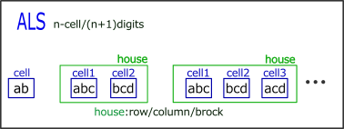
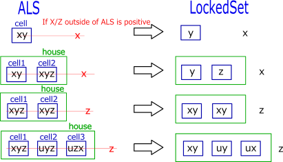
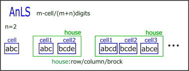
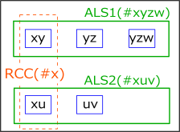
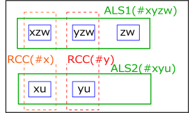

ALS
ALS has become an important method among various Sudoku solving algorithms due to ALS links and RCC (characteristics).
(1) ALS
Locked Set is a state where there are "n candidate digits in n cells belonging to the same house".
Although it is not decided which cell is which digit, it is in a fixed state (Locked) as a subset.
ALS is in a "almost locked" state where there are "n+1 candidate digits" in "n cells" belonging to the same house.

If a digit is confirmed outside the ALS in some way and one digit is removed from the ALS, the ALS becomes Locked.
Although ALS alone cannot be used as a solution, it can be combined with other methods to create various analysis algorithms.
The minimum ALS is "1 cell 2 candidate digits".

(2) A2LS, AnLS
ALS can be extended to "AnLS" which is a cell group of "m cells and m+n candidate digits" in its naive form.
As a natural extension, ALS can be extended to "AnLS",
which is a cell group consisting of "m cells and m+n candidate digits".
GNPX v5 uses ALS-XZ links with A2LS.
It also shows how to use AnLS as a solving algorithm for SueDeCoq (in addition to AnLS, it also uses ALS and RCC).

(3) RCC
The analysis algorithm involving two ALS(AnLS) takes advantage of the common digits limiting effect.
In the following figure, there are two ALSs, and when these satisfy the following conditions,
This digits is called RCC(Restricted Common Candidate).
Condition: Two non-overlapping ALSs have a common number and are in the same house.
(Orange dotted line frame, different from ALS house).

Since the RCCs belong to the same house,
the RCC is positive for only one ALS, and the RCC is negative for the other ALS.
However, it has not been decided which ALS is positive.
If some condition is added here and RCC is affirmed in one ALS ("RCC is in this ALS"), then
In the other ALS, the negative (“RCC is not in this ALS”) is confirmed.
For an ALS that is negative, there will be "n candidate digits in n cells", and this ALS will become a LockedSet.
The following figure shows a case where there are two RCCs between two ALSs(doubly linked).
RCC is only in one ALS. In the case of doublylinked, the two RCCs are not biased towards one ALS,
There is one for each ALS.
However, we have not determined which RCC is in which ALS.
A doublylinked ALS set behaves like a LockedSet as a unit.

Additionally, AnLS may use three or more RCCs.